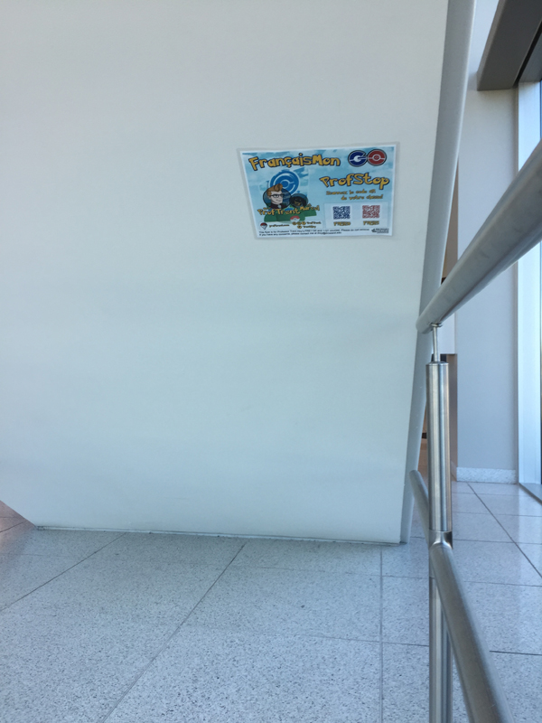
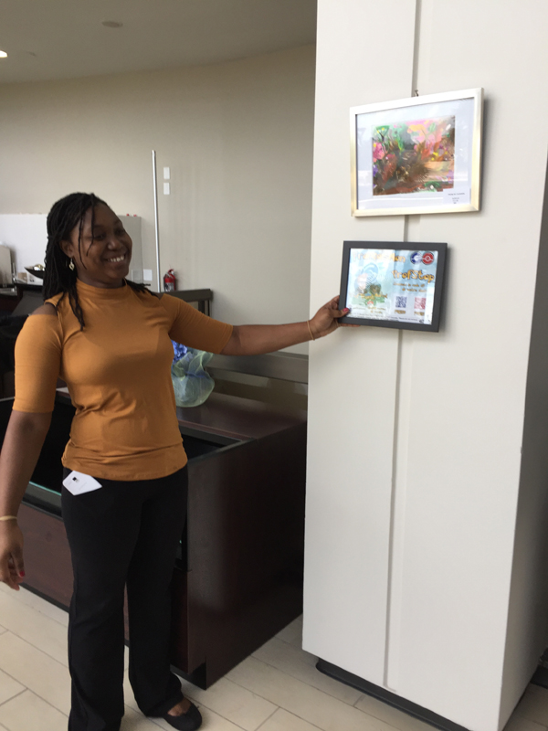
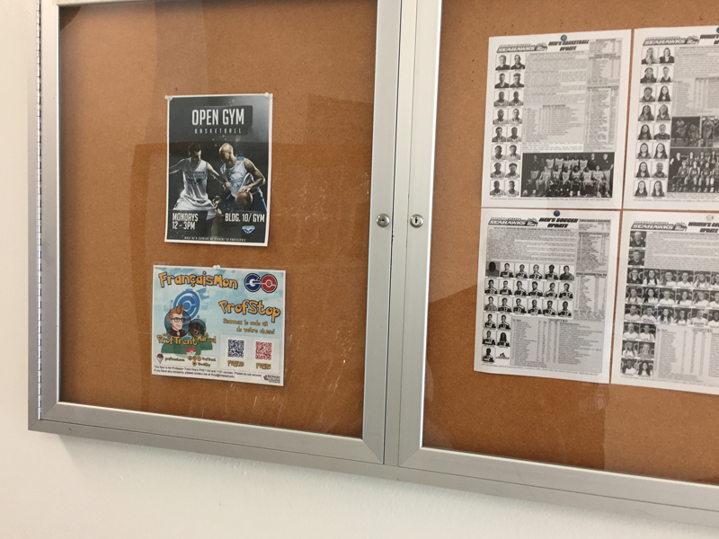
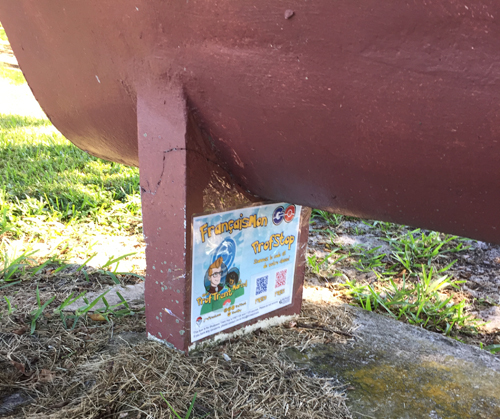

Step 1. Design and Make Physical Materials
This step depends on your particular activity and theme. For a Pokémon GO-themed activity, I definitely needed Pokédex and PokéStop equivalents. Using Adobe Photoshop, I crafted the MarcelDex to contain clues and ProfStop signs for the QR codes.
[caption id="attachment_1564" align="aligncenter" width="300"] Freshly printed and folded MarcelDexes![/caption] Freshly printed and folded MarcelDexes![/caption] |
[caption id="attachment_1565" align="alignnone" width="300"] ProfStop signs! Laminated and ready for posting![/caption] |
If you make signs to post, consider laminating them! They can be removed much easier and will last longer, especially if you place them outside. They look more official and fancy too. That never hurts.
Step 2. Place Your QR Codes
Hopefully you've done some reconnaissance and have scouted out some ideal locations to post your QR codes. Keep in mind that students like the challenge of finding the hidden code, but will get frustrated if it is too well hidden. The goal is for them to do the activity, not spend an hour hunting for your sign. [caption id="attachment_1566" align="aligncenter" width="300"]
A well-placed sign under a grand staircase![/caption] Additionally, ideally your activities and posting area relate to each other. Tying together the narrative, tasks, and the real world help immerse the students in your activity! Before finalizing everything, be sure to ask for permission to post your codes if it is a location outside of your control. You don't want your sign taken down prematurely! Even with permission, signs can sometimes be moved without your knowledge. Try to confirm the exact location of each one and request that the relevant authorities contact you should they need to move it or take it down. [caption id="attachment_1561" align="aligncenter" width="300"]
Deciding where to hang my framed ProfStop. Such high art![/caption]I planned an activity in an art exhibit and got permission from the director to post my sign if it was framed and hanging like the other artwork. I agreed and together we decided on an appropriate place for it. I made the clue very specific in French, only for students to report that they couldn't find the sign. Confused, I returned to the exhibit to find my sign hidden in a dim corner, far from where I had said it was. Don't let this be you!Be wary of posting in places with limited hours. Students may not be on campus doing your activity immediately before and after your class, so they may find but be unable to access a QR code. [caption id="attachment_1563" align="aligncenter" width="400"]

Behind a locked window, safe from harm! Well, unless these basketball players trample us...[/caption]To avoid situations like this, consider posting in the windows rather than on the walls. This way your students can still scan them and you get free publicity from passersby!If you choose an outdoor location, be ready to replace your sign! Even when laminated and snugly taped, signs can fall prey to inclement weather, wild beasts, and other dangers! [caption id="attachment_1562" align="aligncenter" width="500"]

What a clever hiding space under this bench by the lake! Or so I thought...[/caption]I placed one sign under a bench by a lake. I secured it so tightly with tape, I was certain it wouldn't be going anywhere! Needless to say, a few days laters students reported being unable to find that ProfStop. Scoffing that they'd surely made a mistake, I returned to the lake... and my sign was nowhere to be seen. There was not even a hint of tape! It had rained and we have some wild iguanas, but to this day I have no idea what happened...